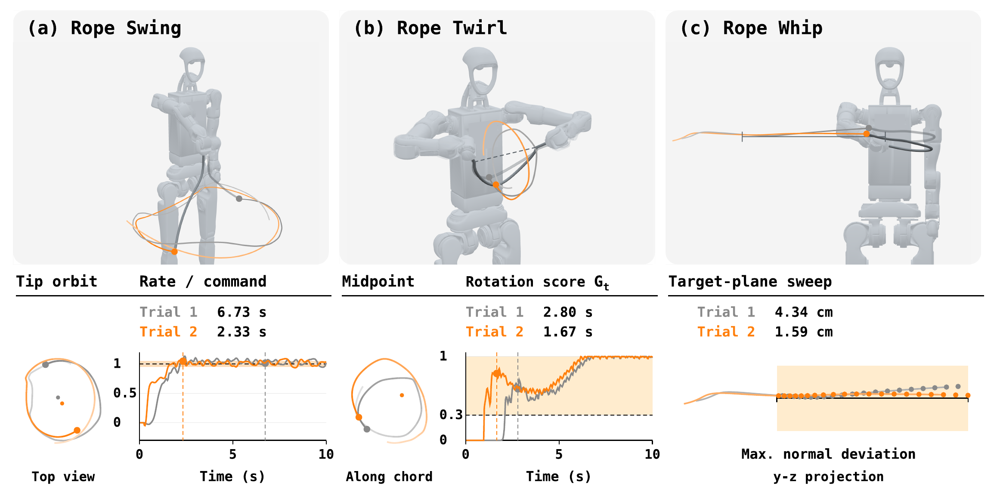
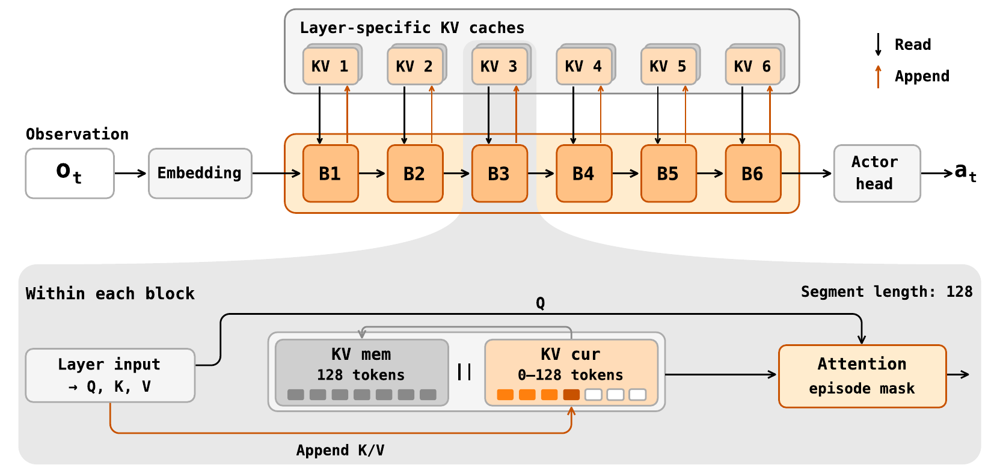
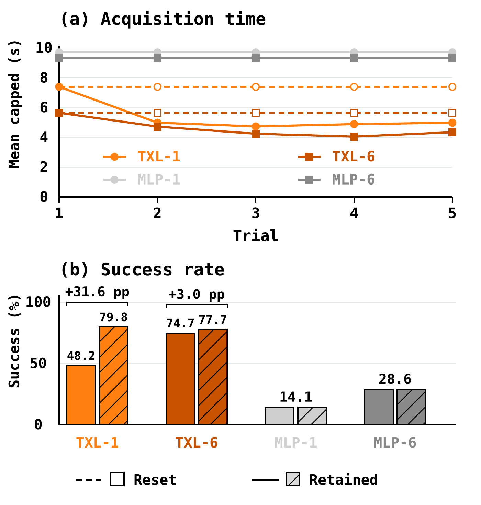
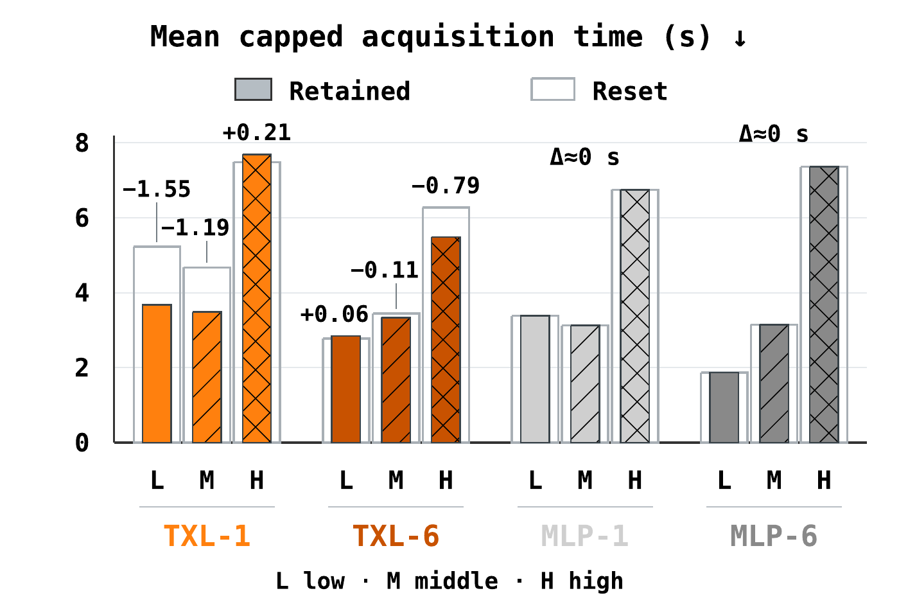
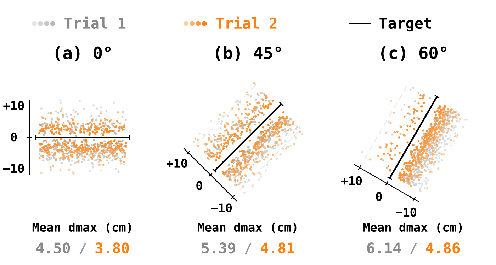
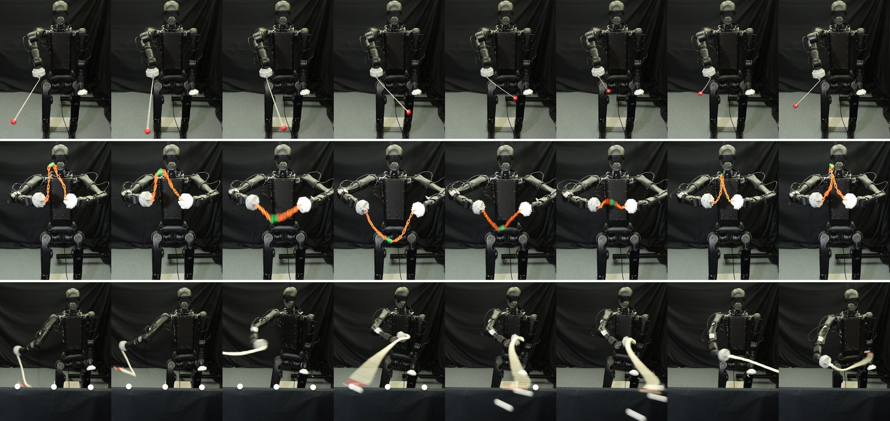
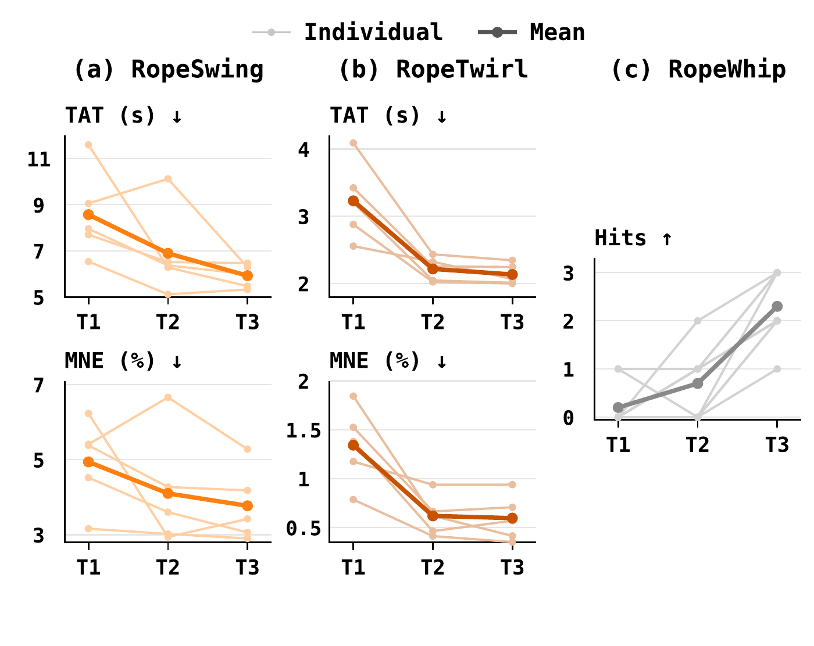
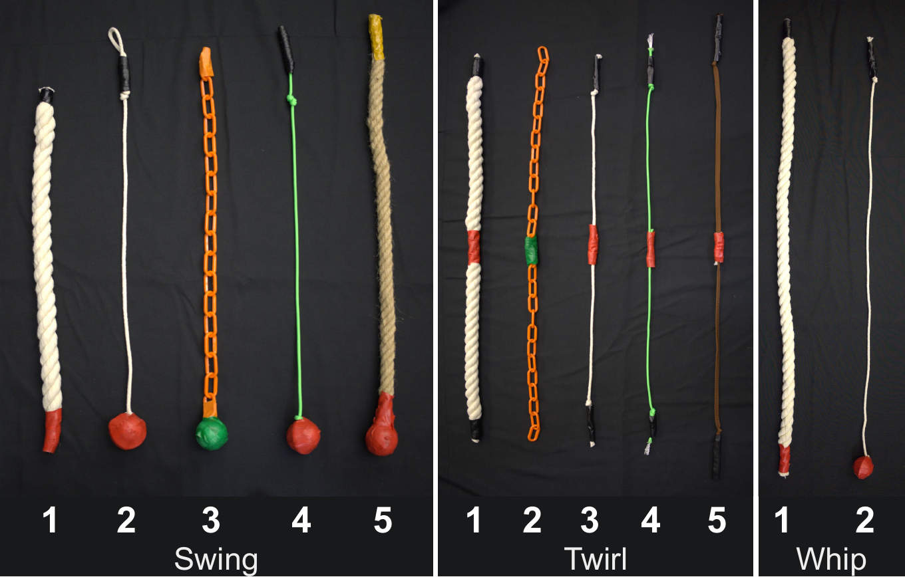

Overview
Every swing teaches the robot something about the rope.
Dynamic rope manipulation — swinging, twirling, whipping — is unusually sensitive to what the rope is made of. The same arm motion produces very different behaviour across ropes of different mass, stiffness and damping, and those properties are hard to identify and harder to carry over from simulation.
Most approaches respond by modelling the rope: calibrate a simulator, estimate its parameters, or fit an action–response model from earlier executions. RopeFormer starts from a different question.
Instead of explicitly modelling rope dynamics that are difficult to identify and transfer, can a robot learn them implicitly from its own interaction history and use that to improve its next attempt?
The answer is a Transformer-XL policy that keeps the ordered history of robot states, actions and observed rope motion across repeated trials. Its weights stay fixed and it is never told the rope's parameters; adaptation happens entirely through the retained context. We study this on three tasks — single-arm Rope_Swing, bimanual Rope_Twirl and target-line Rope_Whip — in controlled simulation and on a Unitree H1-2 with ropes it never saw in training.
Video
Project video
Tasks
One policy per task, three qualitatively different dynamics
Each task is trained separately but shares the same formulation, architecture and multi-trial protocol. A trial is one attempt at the task; an episode groups successive trials on the same rope. The robot–rope state is reset between trials, but the policy's context is not — it is cleared only when a new episode, and therefore a new rope, begins.

(a) Rope_Swing
The right hand holds one end and drives the free tip into sustained rotation at a commanded signed angular velocity. Metric: time to acquire the commanded rotation.
(b) Rope_Twirl
Both hands hold the rope and coordinate to rotate its midpoint about the hand-to-hand line at a commanded rate. Metric: acquisition time under a combined rate, radius, direction and clearance score.
(c) Rope_Whip
The right hand drives the free tip along a prescribed line segment in a task plane — a transient sweep rather than a sustained motion. Metric: maximum normal deviation of the tip path from the target line.
Method
Keep the context, freeze the weights
At every control step the policy sees normalized joint states, the measured rope points, the task command or target, and its previous action — never the full rope state and never its physical parameters. A feed-forward encoder turns each observation into one token; a six-layer Transformer-XL combines it with cached representations of earlier steps; an actor head maps the result to joint targets at 30 Hz. The rope's response enters the next observation, closing the loop. History conditions the action directly, without an intermediate parameter estimate.

Context survives the reset
Segment boundaries organise computation; trial boundaries restart physical motion. Keeping the two separate lets action–response information from a previous attempt condition the next one. A mask excludes tokens from other episodes.
Trained on repeated attempts
In Newton, each episode samples a rope (mass density, bending stiffness, damping, drag) and an actuator (tracking, delay, limits), then runs several trials with context retained. The policy therefore meets many action–response relationships across episodes and can exploit one within an episode.
The actor never sees the rope's parameters
PPO with an asymmetric critic: the critic receives simulator-only rope and actuator parameters, the actor receives only its observation history. Advantage estimation stops at trial resets; context does not.
Simulation
Same rope, same start — the only thing that changes is memory
The central comparison uses the same checkpoint on the same 384-rope evaluation set with matched initial states and noise, and either retains the context across trial boundaries or resets it at every boundary. Both conditions keep within-trial history, so the difference isolates access to previous trials. An MLP with an eight-frame observation stack serves as a non-recurrent reference.
Rope_Twirl, trial 2 twice. Left: context cleared at the trial boundary. Right: context retained. Rope, arm, initial state and noise realisation are identical, so the two columns can only differ through memory. For this rope, trial 1 took 4.07 s to lock the rotation; trial 2 takes 4.07 s with memory cleared and 2.67 s with memory kept. One rope is an illustration, not a statistic — the aggregate is in the figures below.
Rope_Swing, one policy, two ropes. Same command, same geometry; only the bending stiffness differs. The policy is not told which rope it holds, yet the arm motion it settles on is different.
Rope_Whip, four consecutive trials. Same rope, same target line, bit-identical start. Maximum deviation from the line drops from 11.8 cm to 3.5, 3.0 and 2.6 cm across the four attempts.
Does cross-trial history improve control?



Retained context improves aggregate performance in all three tasks, but not uniformly. Stratifying the 384 Rope_Twirl ropes by stiffness shows the gain moving between observation settings and dynamics regimes, and the absolute ordering of architectures flipping between soft and stiff ropes. History is a useful context, not a guarantee that every next trial is better.
Real robot · Unitree H1-2
Repeated improvement on ropes never seen in training
A frozen TXL-1 policy per task runs on a Unitree H1-2 at 30 Hz. Two ZED 2i cameras track a single marker — the free tip for Swing and Whip, the midpoint for Twirl — and triangulate it into the same observation the policy saw in simulation. Measured rope properties are not inputs. Each three-trial block starts with empty context at T1 and keeps it through T2 and T3; between trials the policy pauses while the rope is returned to rest.



BibTeX
@article{wu2026ropeformer,
title = {RopeFormer: Cross-Trial Adaptation from Interaction History for Dynamic Rope Manipulation},
author = {Wu, Menglin and Yao, Kaixiang and Luan, Shangbo and Tomizuka, Masayoshi and Chen, Yuxin},
journal = {arXiv preprint arXiv:XXXX.XXXXX},
year = {2026}
}